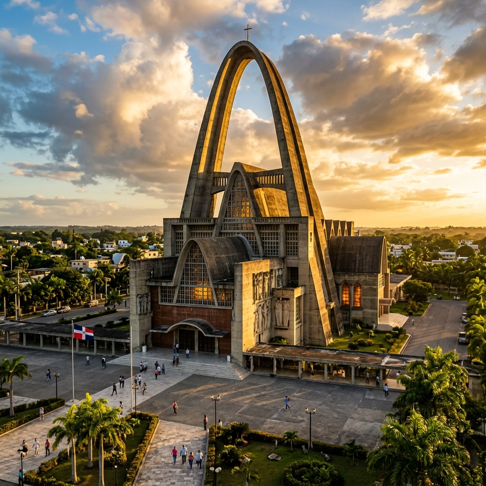
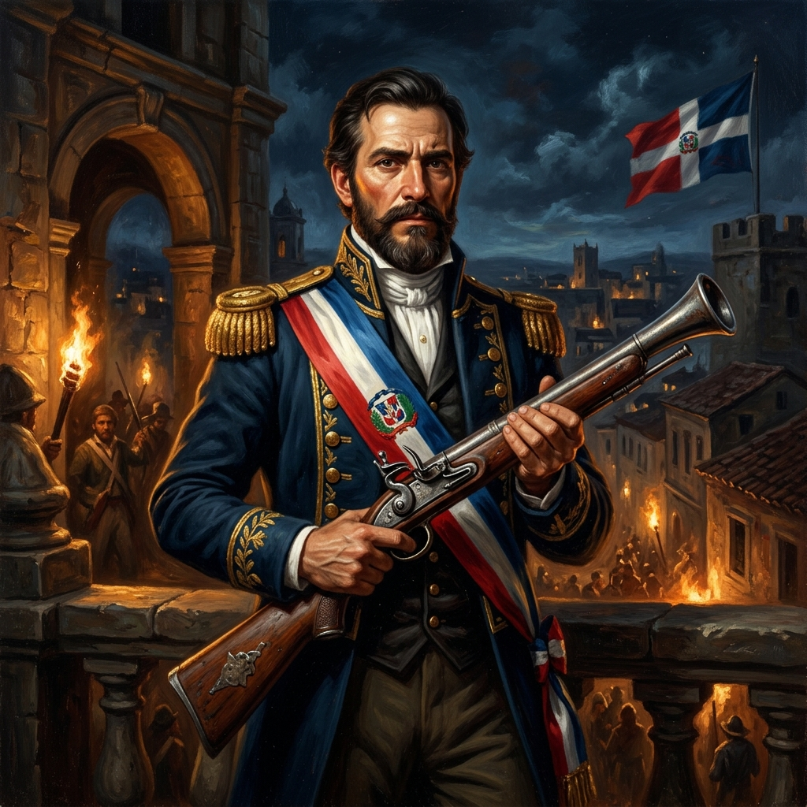
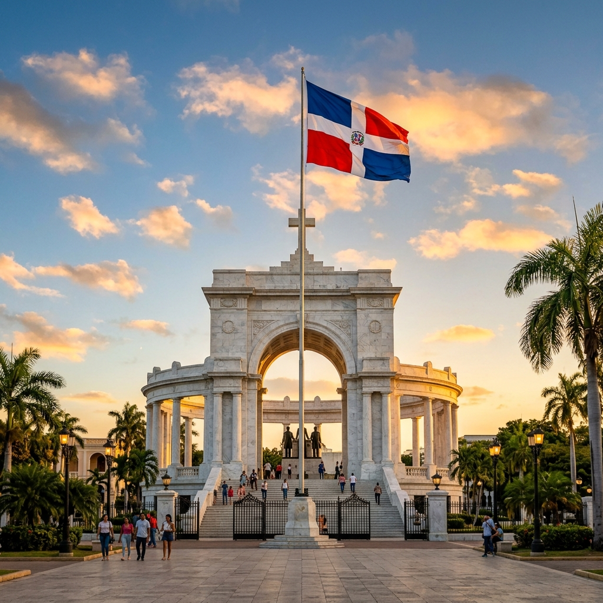
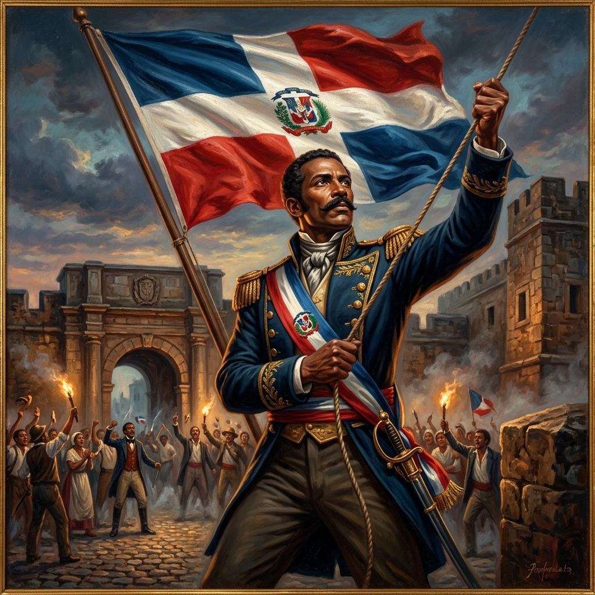
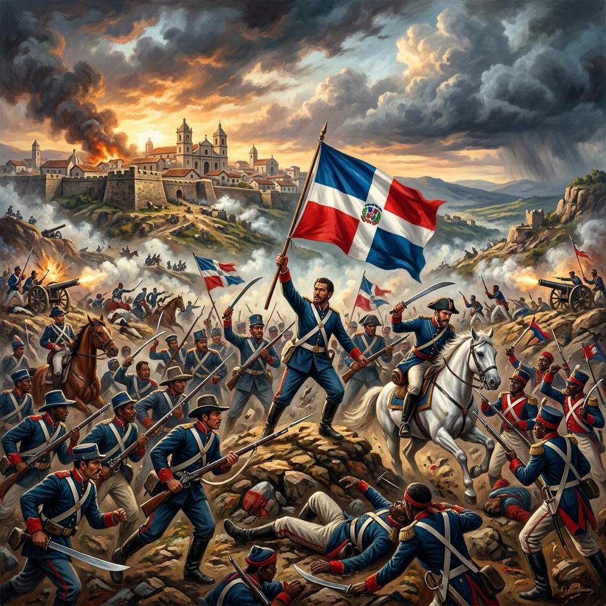
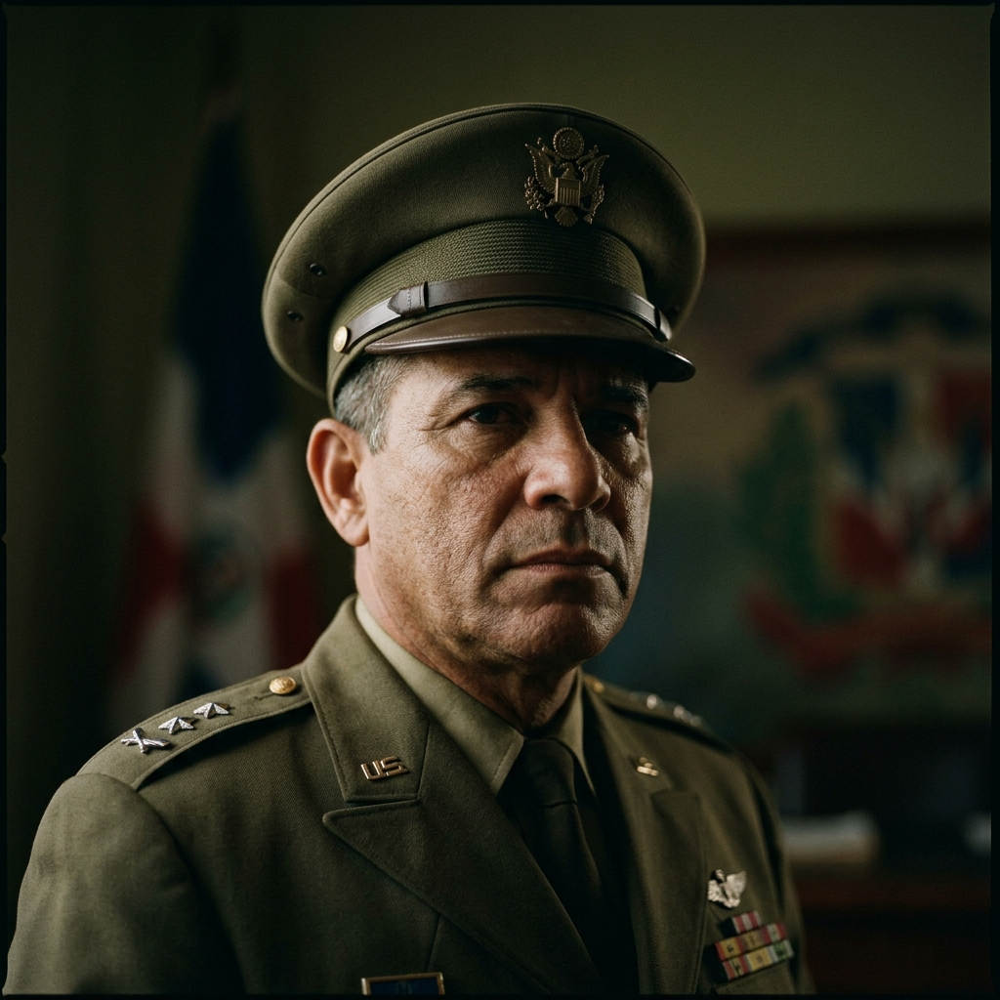
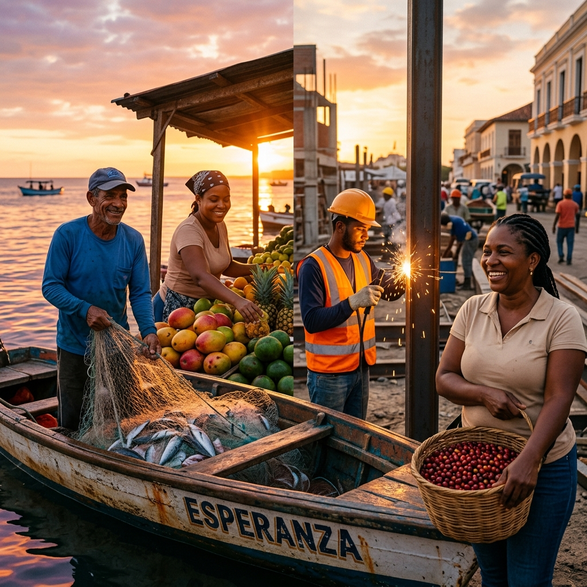
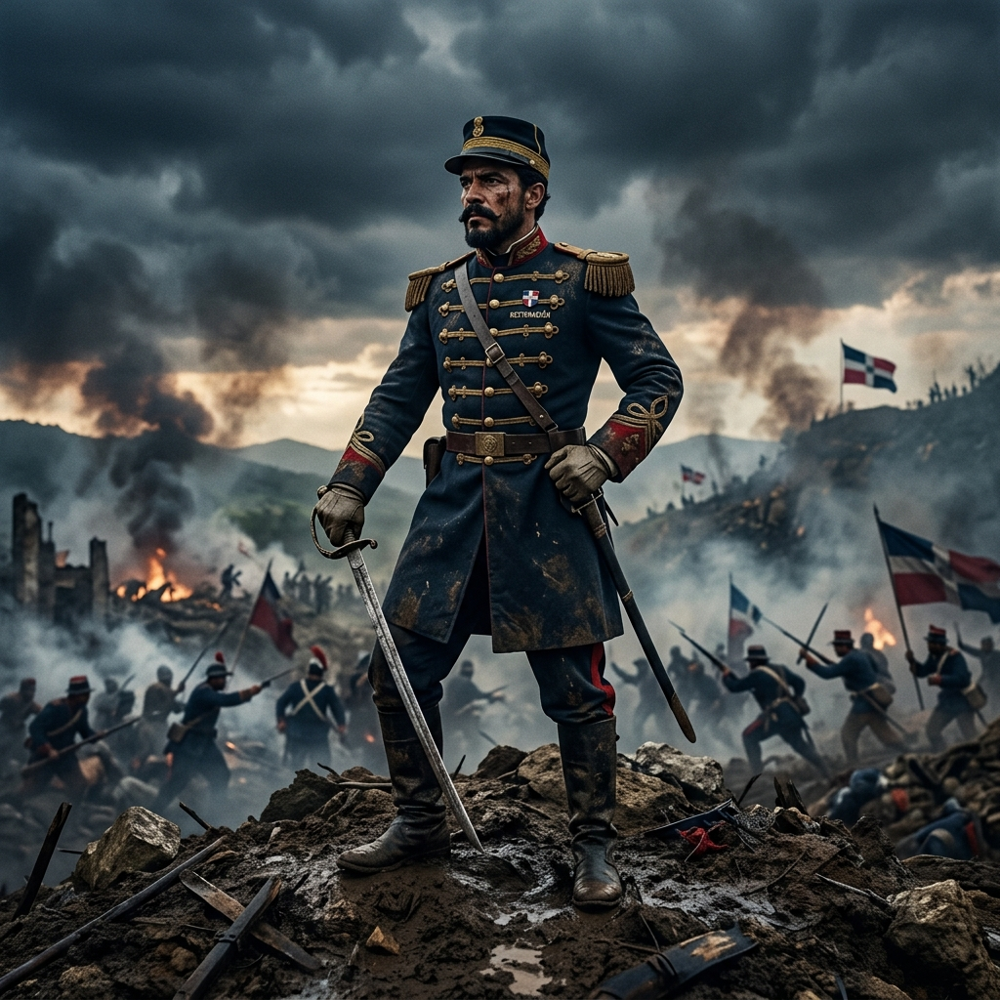

EFEMÉRIDES PATRIAS
Un viaje por la historia y los valores de la República Dominicana.

Día de Nuestra Señora de la Altagracia
Festividad religiosa dedicada a la protectora espiritual del pueblo dominicano. Cada año, miles de fieles peregrinan a la Basílica de Higüey para rendir honor a la "Madre de la Altagracia".

Natalicio de Juan Pablo Duarte
Padre de la Patria y fundador de la sociedad secreta La Trinitaria. Duarte dedicó su vida y recursos a la creación de una República Dominicana independiente, democrática y libre de toda dominación extranjera.

Natalicio de Matías Ramón Mella
Héroe de la Independencia y Padre de la Patria. Mella es recordado por disparar el histórico trabucazo en la Puerta del Conde, acción que despertó el espíritu libertador de la nación.

Independencia Nacional
En 1844, los patriotas dominicanos liderados por la sociedad secreta La Trinitaria proclamaron la separación de Haití. El nacimiento de nuestra nación libre y soberana.

Natalicio de Francisco del Rosario Sánchez
Héroe nacional y Padre de la Patria. Tras el exilio de Duarte, asumió el liderazgo de la lucha independentista y fue quien izó por primera vez la bandera dominicana en el Baluarte del Conde.

Batalla de Santiago (30 de Marzo)
Segunda batalla posterior a la Independencia Nacional, donde las tropas dominicanas derrotaron al ejército haitiano en Santiago, consolidando la soberanía recién proclamada.

Revolución de Abril (F. Caamaño)
Líder histórico de la Revolución de 1965 y Presidente Constitucional. Defendió con valentía la soberanía nacional exigiendo el retorno de la democracia.

Día Internacional del Trabajo
Día dedicado a honrar a los trabajadores dominicanos y sus aportes al desarrollo económico y social del país. Una jornada de reflexión sobre los derechos laborales.

Día de las Madres
Una de las festividades más importantes de la cultura dominicana, donde se celebra el amor incondicional y el pilar fundamental de la familia dominicana: la madre.

Restauración de la República
Gesta patriótica iniciada en 1863 con el Grito de Capotillo. Este conflicto devolvió la soberanía al país tras la anexión a España.

Natalicio de Gregorio Luperón
Nacimiento de la "Primera Espada de la Restauración". Destacado militar y líder político que defendió férreamente la soberanía dominicana.

Día de la Constitución
Conmemoración de la firma de la primera Constitución dominicana en San Cristóbal en 1844, sentando las bases democráticas de nuestra nación.